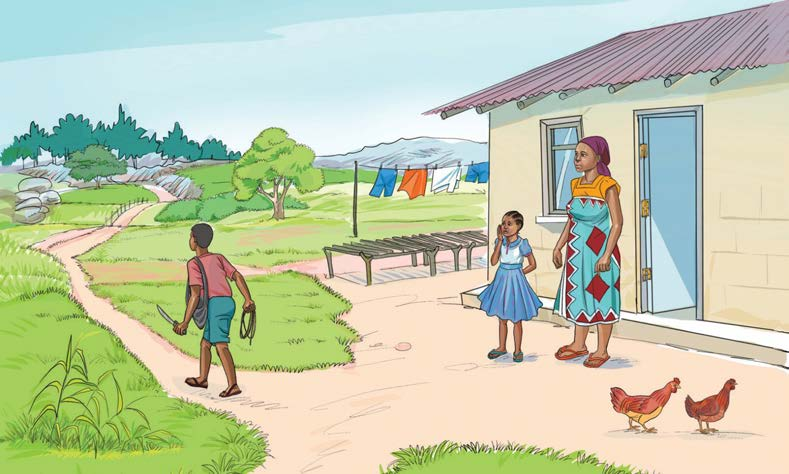

mama yake Ziada alimtuma Bahati kwenda porini peke yake kutafuta kuni. Bahati alikubali. Ziada alisikia maneno ya mama yake na kumwomba afuatane na Bahati. Mama yake alimkataza, akamwambia akachote maji. Ziada alikubali kwa shingo upande.

Bahati alichukua panga na kamba ya kufungia kuni akaondoka. Huko porini, kulikuwa na miti mikubwa na mirefu sana. Ilikuwa wakati wa masika. Hivyo, miti haikuwa imekauka. Alilazimika kwenda mbele zaidi. Alipouona mti mkavu, alifurahi sana. Aliusogelea na kuanza kuukata. Alifanikiwa kupata kuni za kutosha.
Bahati alijitwika mzigo wa kuni na kuanza kurudi nyumbani. Maskini Bahati! Alisahau njia aliyopita awali. Alijaribu kuzunguka porini akiwa na mzigo wake kichwani, lakini hakuikumbuka njia. Hatimaye, alichoka na kuamua kukaa chini ya mti huku akilia.
Ilipofika jioni, Ziada alimuuliza mama yake, “Mama mbona Bahati harudi? Mimi nataka kumfuata.” Mama alimwambia Ziada, “Usiende giza limeingia. Porini kuna wanyama wakali.” Ziada alisema, “Mama, ina maana Bahati yeye haogopi wanyama wakali?” Mama yake alimjibu huku akifoka, “Sijui kumetokea nini! Hajarudi mpaka muda huu! Fikiria tangu aondoke mchana hadi sasa hajaleta kuni. Siyo uvivu huo? Ina maana leo tusingepika chakula kama tusingekuwa na mkaa hapa nyumbani?”